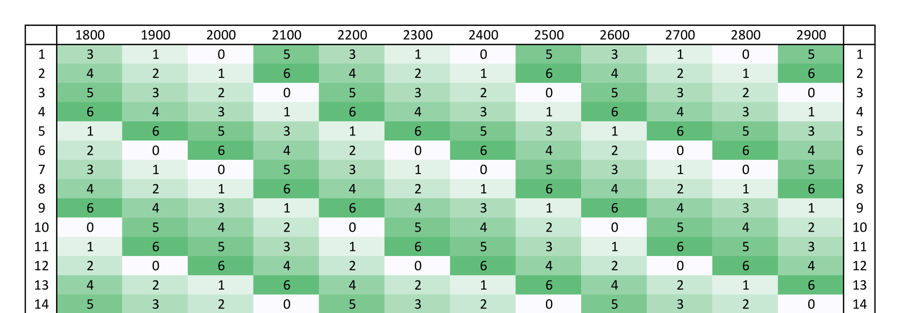

Эта статья получилась из вопроса, который я сам себе задал вчера.
«Существует ли год, в котором ни один месяц не начинается в понедельник?»
На первый взгляд — да. Год может начинаться с любого дня недели, месяцы тоже каждый раз начинаются в разные дни недели. Вариантов множество, скорее всего, найдётся и не один такой год.
Так я подумал в первую минуту после того, как задался вопросом. Это следовало бы доказать. Перебрать все года, например. Простой и быстрый способ, но не интересный. Доказать математически было намного более заманчивой идеей, но как к этому подступиться я совершенно не понимал. Поэтому просто начал выписывать продолжительность каждого месяца на бумагу.
Тут стоит оговорить, что речь дальше пойдёт про григорианский календарь, по которому мы живём с 1918 года. Однако часть рассуждений будет верна и для юлианского.
Так как же на самом деле?
На самом деле такого года не существует. Давайте разбираться почему.
Сначала вспомним, сколько дней в каждом месяце:
| Янв | Фев | Март | Апр | Май | Июнь | Июль | Авг | Сен | Окт | Нояб | Дек |
| 31 | 28 / 29 | 31 | 30 | 31 | 30 | 31 | 31 | 30 | 31 | 30 | 31 |
Теперь посмотрим, на сколько дней в каждом месяце больше, чем в четырёх неделях.
| Янв | Фев | Март | Апр | Май | Июнь | Июль | Авг | Сен | Окт | Нояб | Дек |
| 3 | 0 / 1 | 3 | 2 | 3 | 2 | 3 | 3 | 2 | 3 | 2 | 3 |
В этом месте возникает следующая идея. Если к дате прибавить 7 дней, то день недели не изменится. Работает модульная арифметика. Отсюда легко понять, что если дней в месяце на два больше, чем в четырёх неделях, то первое число следующего месяца сдвинется на два дня недели относительно первого числа текущего месяца. Да и вообще,
если в месяце (28 + N) дней, то первое число следующего месяца сдвинется на N дней относительно дня недели первого числа текущего месяца.
Например, в этом году январь начался во вторник, поэтому февраль начался в пятницу. Вт + 3 = Пт.
Насколько же сдвинут день недели первого числа некоторого месяца? Чтобы найти это, надо просуммировать «излишки» дней над четырьмя неделями во всех предыдущих месяцах. В таблице представлены сдвиги относительно дня недели на первое января. Первая строка для невисокосного года, вторая для високосного.
| Янв | Фев | Март | Апр | Май | Июнь | Июль | Авг | Сен | Окт | Нояб | Дек |
| 0 | 3 | 3 | 6 | 8 | 11 | 13 | 16 | 19 | 21 | 24 | 26 |
| 0 | 3 | 4 | 7 | 9 | 12 | 14 | 17 | 20 | 22 | 25 | 27 |
Но это выглядит не очень показательно, да и мы знаем, что сдвиг на семь дней не меняет день недели. Поэтому запишем теперь в таблицу остатки от деления суммарных сдвигов на 7.
| Янв | Фев | Март | Апр | Май | Июнь | Июль | Авг | Сен | Окт | Нояб | Дек |
| 0 | 3 | 3 | 6 | 1 | 4 | 6 | 2 | 5 | 0 | 3 | 5 |
| 0 | 3 | 4 | 0 | 2 | 5 | 0 | 3 | 6 | 1 | 4 | 6 |
Вот теперь другое дело! Ясно видно, как определить день недели на первое число любого месяца, если известен день недели на первое января. Надо просто прибавить сдвиг для интересующего месяца. Закономерность февраль-март-ноябрь я знаю ещё со школы, а другие не замечал.
Мы получили ответ на вопрос в начале статьи.
Так как для обоих вариантов года в таблице присутствуют все сдвиги от 0 до 6, то в любом году есть месяц, который начинается в какой-то определённый день недели.
Но теперь можно задавать другие вопросы. Например, «в каких годах такой месяц только один?» или «в какие года таких месяцев максимально много?». Для этого надо уметь определять день недели на первое января любого года.
Когда я учился программировать, а это было в 10 классе школы на PascalABC, одним из первых серьёзных заданий было реализовать процедуру, распечатывающую календарь на год, который передавался как аргумент. У нас были подсказки, какие функции для этого надо реализовать. В целом всё сводилось к подсчёту дней между двумя датами: эталонной и текущей, чтобы определить день недели на первое января нужного года.
Такой подход работал, но скорость зависела от того, насколько близко необходимый год к эталонному. Меня это расстраивало, но придумать что-то лучше я тогда не смог. Теперь же настал идеальный момент, чтобы до конца разобраться в этом.
Високосные года в григорианском календаре назначаются следующим образом:
- год, номер которого кратен 400, — високосный
- остальные года, номер которых кратен 100, — невисокосные
- остальные года, номер которых кратен 4, — високосные
- остальные года — невисокосные
Из этого описания видно, что цикл високосности имеет период в 400 лет. Но не ясно, будут ли такие четырёхсотлетние циклы начинаться в один и тот же день недели.
Заметим, что первое января от года к году смещается на один или два дня недели, и напишем
bool is_leap_year(int year)
{
if ((year % 400) == 0) return true;
if ((year % 100) == 0) return false;
if ((year % 4) == 0) return true;
return false;
}
void first_weekdays_table()
{
ofstream file("weekdays.txt", ios_base::out);
int weekday = 3;
for (int i = 1801; i <= 3000; ++i)
{
file << weekday;
if ((i % 100) != 0)
{
file << " ";
}
else
{
file << endl;
}
weekday += is_leap_year(i) ? 2 : 1;
weekday %= 7;
}
file.close();
}
Выводятся дни недели на первое января каждого года, с 1801 до 3000. Понедельник обозначается как «0», вторник как «1», и т. д. Представим всё в виде таблицы из двух полных четырёхсотлетних циклов и двух половинок. По горизонтали идут столетия, по вертикали года в этих столетиях. В ячейки на пересечении столетия и года написан день недели, в который этот год начался. Например, день недели, в который начался 1997 год, стоит на пересечении столбца «1900» и строки «97». Это среда. Полная версия таблицы: часть 1, часть 2.
В таблице сразу можно заметить две вещи: четырёхсотлетние циклы действительно начинаются в один день недели (2001, 2401 и 2801 года; понедельник), а вместо 2000 года есть «тысяча девятьсот сотый». Последнее сделано нарочно, для дальнейшего удобства. Первый же факт позволяет нам без препятствий двигаться дальше.
В григорианском календаре все четырёхсотлетние циклы начинаются в понедельник.
Но самое интересное кроется в полной версии таблицы. Можно обнаружить, что каждое столетие внутри четырёхсотлетнего цикла состоит из повторяющегося двадцативосьмилетнего цикла:
| 0 | 1 | 2 | 3 | 5 | 6 | 0 | 1 | 3 | 4 | 5 | 6 | 1 | 2 | 3 | 4 | 6 | 0 | 1 | 2 | 4 | 5 | 6 | 0 | 2 | 3 | 4 | 5 |
Первое столетие начинается со смещением по циклу, равным 0, второе со смещением 4, третье со смещением 8 и четвёртое со смещением 12. Именно для этого таблица представлена в виде, где в столетии есть «сотые» года и нет нулевых. Стоит сказать, что всего существует 14 различных вариантов года. В двадцативосьмилетнем цикле по одному разу на каждый день недели приходится начало високосного года и по три раза начало не високосного.
Теперь мы можем определить день недели для любой даты, не используя опорных дат. Для этого нам надо понять, в каком столетии внутри четырёхсотлетнего цикла находится год и какой он по счёту в этом столетии. По таблице определим день недели на первое января года, а с помощью первой части статьи — день недели в конкретное число нужного месяца. Вместо тысячи слов
int get_weekday(int year, int month, int day)
{
int weekdays[] = {0, 1, 2, 3, 5, 6,
0, 1, 3, 4, 5, 6,
1, 2, 3, 4, 6,
0, 1, 2, 4, 5, 6,
0, 2, 3, 4, 5};
int shift_not_leap[] = {0, 3, 3, 6, 1, 4, 6, 2, 5, 0, 3, 5};
int shift_leap[] = {0, 3, 4, 0, 2, 5, 0, 3, 6, 1, 4, 6};
bool is_leap = is_leap_year(year);
year -= 1;
year %= 400;
int century = year / 100;
year %= 100;
int index = (year + (4 * century)) % 28;
int weekday = weekdays[index];
weekday += is_leap
? shift_leap[month - 1]
: shift_not_leap[month - 1];
weekday += (day - 1);
weekday %= 7;
return weekday;
}
С помощью всего двух таблиц можно определить день недели для любой даты, не используя при этом опорных дат.
Последовательность дней недели на первое января в двадцативосьмилетнем цикле:
| 0 | 1 | 2 | 3 | 5 | 6 | 0 | 1 | 3 | 4 | 5 | 6 | 1 | 2 | 3 | 4 | 6 | 0 | 1 | 2 | 4 | 5 | 6 | 0 | 2 | 3 | 4 | 5 |
И таблица смещений дней недели на первое число каждого месяца для невисокосного и високосного годов:
| Янв | Фев | Март | Апр | Май | Июнь | Июль | Авг | Сен | Окт | Нояб | Дек |
| 0 | 3 | 3 | 6 | 1 | 4 | 6 | 2 | 5 | 0 | 3 | 5 |
| 0 | 3 | 4 | 0 | 2 | 5 | 0 | 3 | 6 | 1 | 4 | 6 |
Во время написания статьи, я нашёл на Хабре две схожие по тематике: раз и два. Автор первой с помощью специальной таблицы показывает, как найти в уме день недели для дат в XX и XXI веках. Представленная им таблица содержит 56 чисел. Предложенный в статье алгоритм использует таблицу дней недели и две таблицы смещений, содержащие (28 + 2*12) = 52 числа, которые необходимо запомнить. Весь исходный код лежит на GitHub'е.
Интересный факт: с 1 по 13 февраля 1918 года в Советской России не родился ни один человек.
Задавайте себе вопросы с утра по воскресеньям =)
Если представить двадцативосьмилетний цикл в виде таблицы,
0, 1, 2, 3, 5, 6,
0, 1, 3, 4, 5, 6,
1, 2, 3, 4, 6,
0, 1, 2, 4, 5, 6,
0, 2, 3, 4, 5
то становится понятно, как можно вычислить смещение дня недели на первое января:
weekday = (index + (index / 4)) % 7;
С учётом этого, а также того, что смещения для месяцев в високосном году можно вычислить через смещения в невисокосном, напишем
int get_weekday_c(int year, int month, int day)
{
int shifts[] = {0, 3, 3, 6, 1, 4, 6, 2, 5, 0, 3, 5};
int shift = shifts[month - 1];
if (is_leap_year(year) and (month > 2))
{
shift += 1;
};
year = (year - 1) % 400;
int century = year / 100;
int index = ((4 * century) + (year % 100)) % 28;
int weekday = (index + (index / 4)) + shift + (day - 1);
return (weekday % 7);
}
Таким образом, можно вычислить день недели для любой даты, зная всего лишь 12 чисел: смещения дней недели на первое число каждого месяца.
{kind=link}
{kind=link}